side quest no. 02
photos of japan
I spent a month in Japan (and Korea) and used the trip to try my hand at photography. I’m a film nerd and have always loved images, so I wanted to dip my toes in. Here are the photos that survived the learning curve.
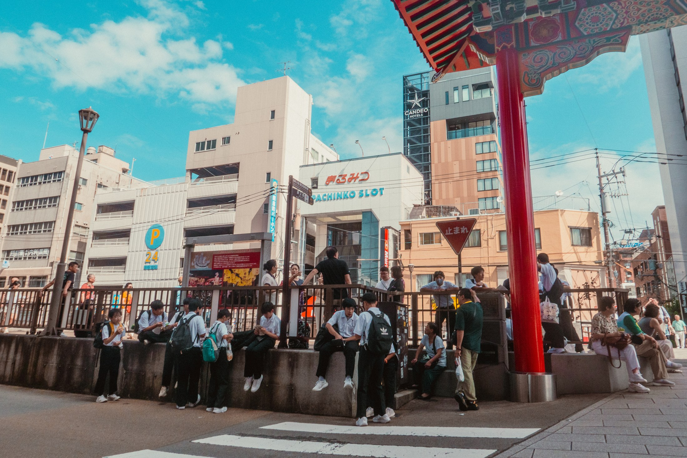
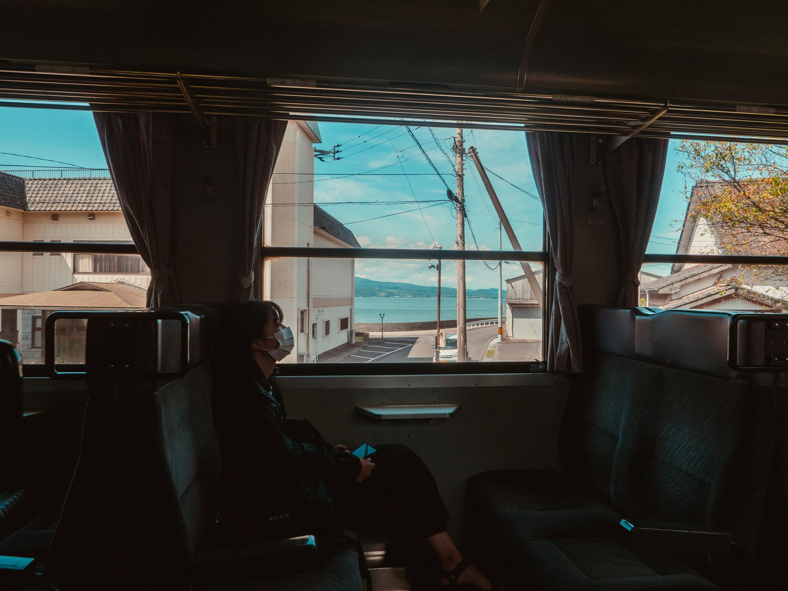
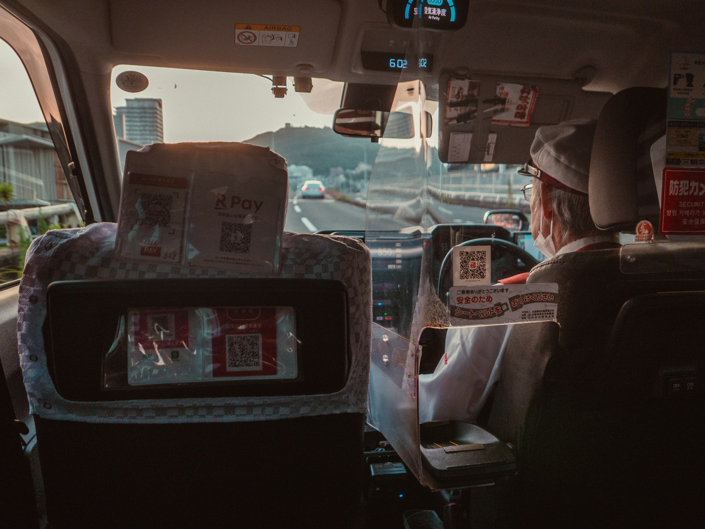
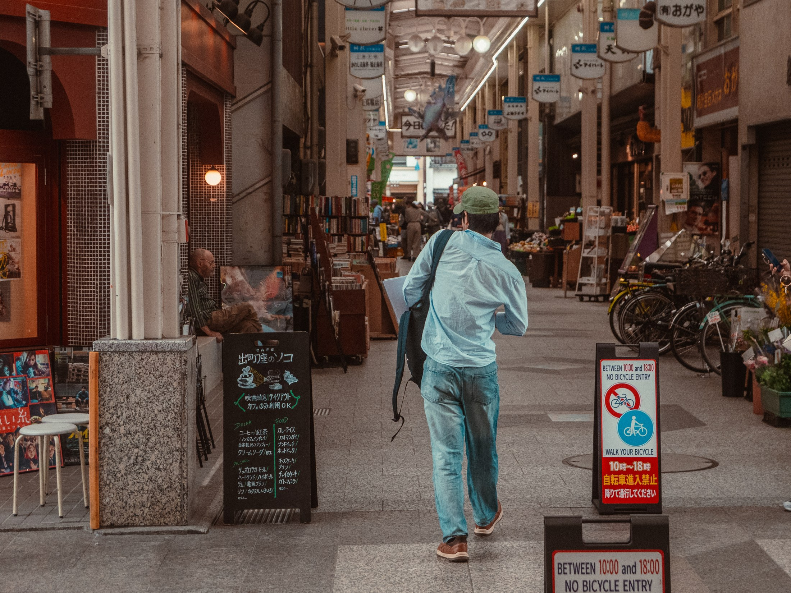
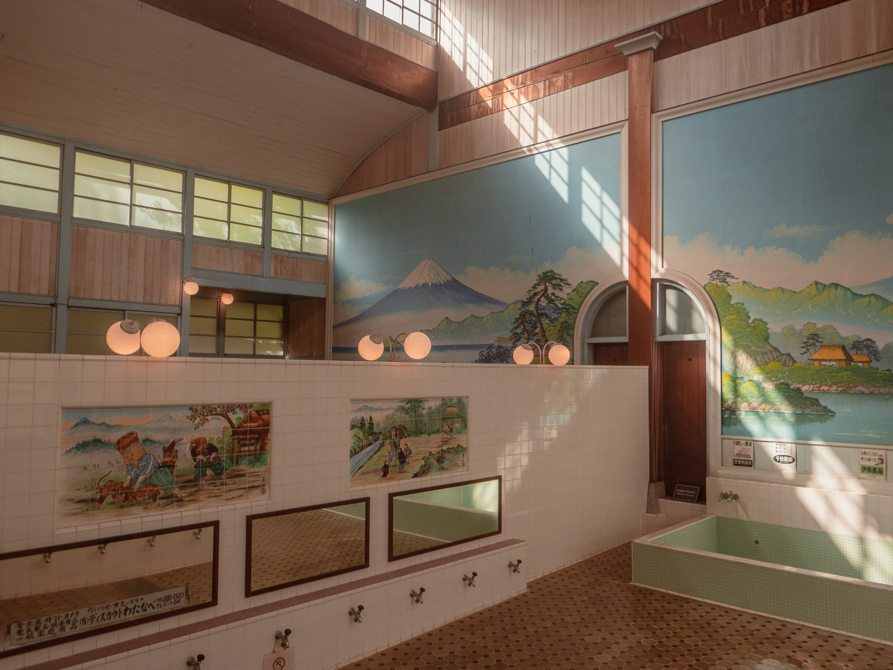
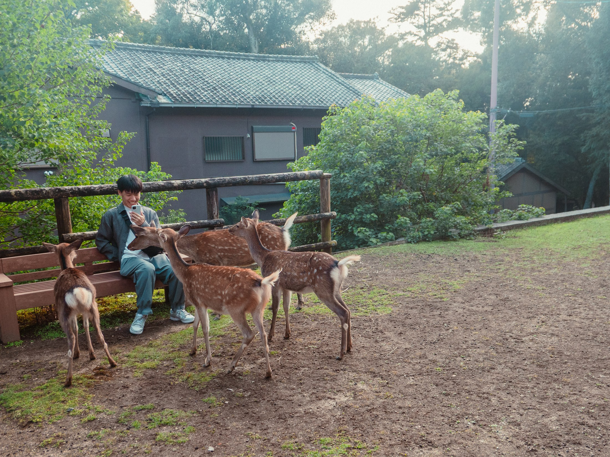
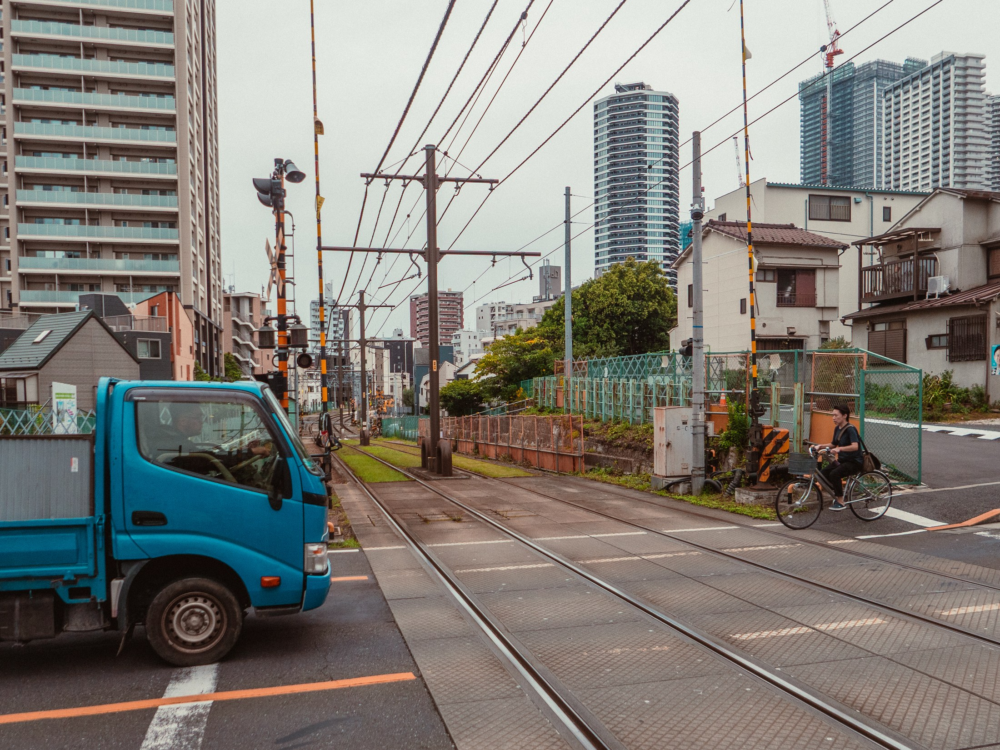
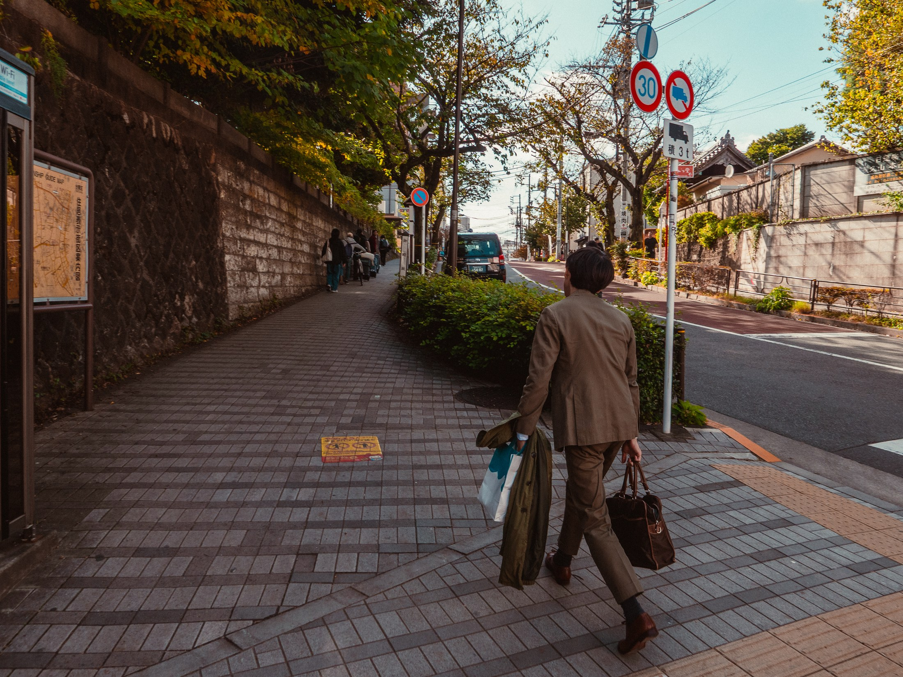
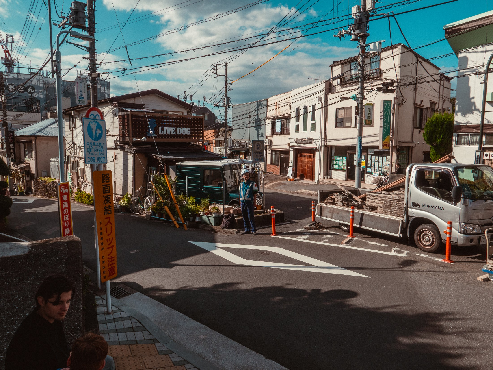
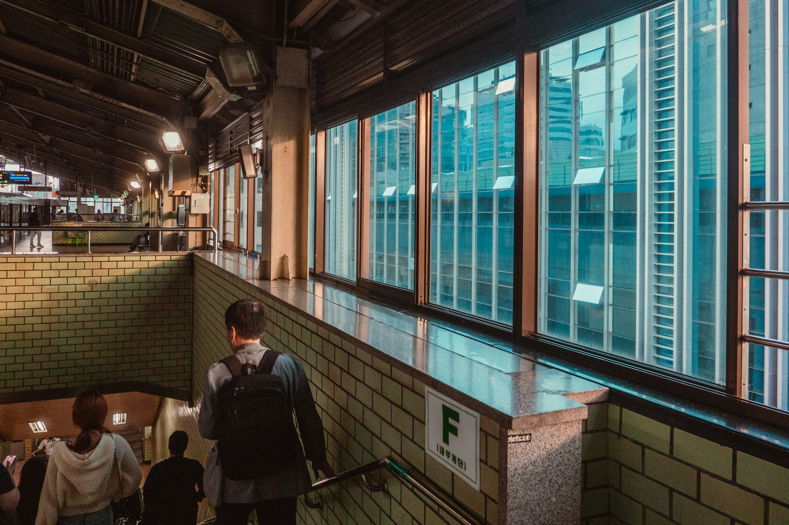
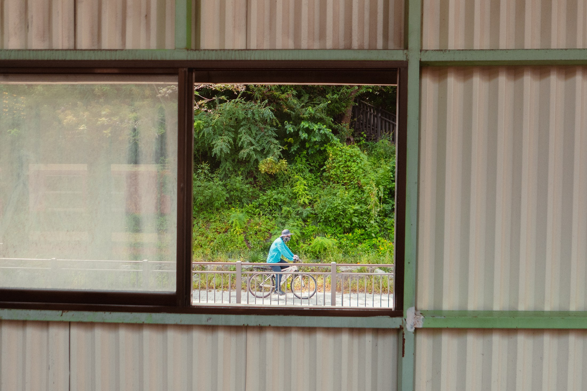
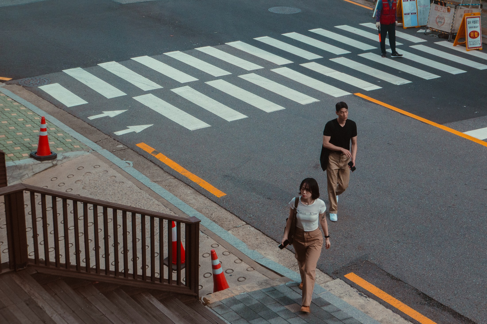
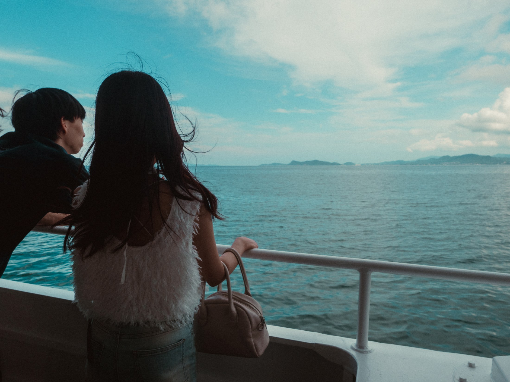